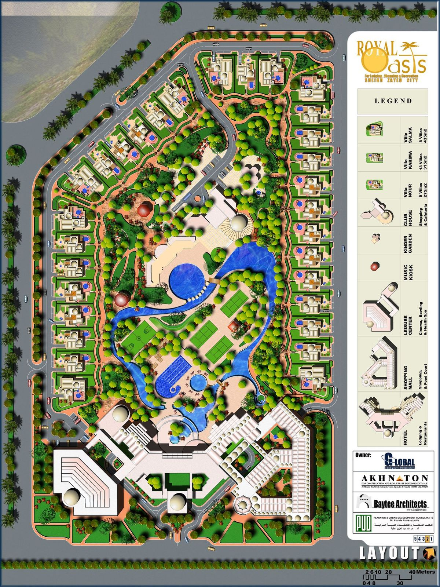

The Royal Oasis
Mixed-use development · Sheikh Zayed City, Egypt
The Royal Oasis, a residential, shopping and hotel complex in Sheikh Zayed City, for Capital Group.
Partners
PUD
Client
Capital Group
More from Sheikh Zayed City
2010Reflections Mixed Use ComplexSheikh Zayed City · 20102009Reflections (Cleopatra Water Courts)Sheikh Zayed City · 2009 Sumou Boulevard, New CairoMostakbal City, New Cairo · 2026
Sumou Boulevard, New CairoMostakbal City, New Cairo · 2026 Golden Gate, New CairoNew Cairo · 2020-2021
Golden Gate, New CairoNew Cairo · 2020-2021 Al Alamein Riviera Vision Master PlanNorth Coast (New Alamein) · 2022
Al Alamein Riviera Vision Master PlanNorth Coast (New Alamein) · 2022 Alex Gate Mixed Use DevelopmentAlexandria · 2006
Alex Gate Mixed Use DevelopmentAlexandria · 2006
Sumou Boulevard, New CairoMostakbal City, New Cairo · 2026Golden Gate, New CairoNew Cairo · 2020-2021Al Alamein Riviera Vision Master PlanNorth Coast (New Alamein) · 2022Alex Gate Mixed Use DevelopmentAlexandria · 2006